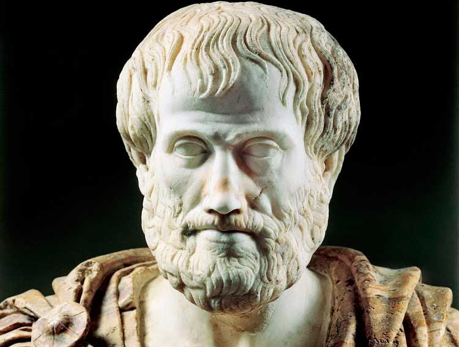
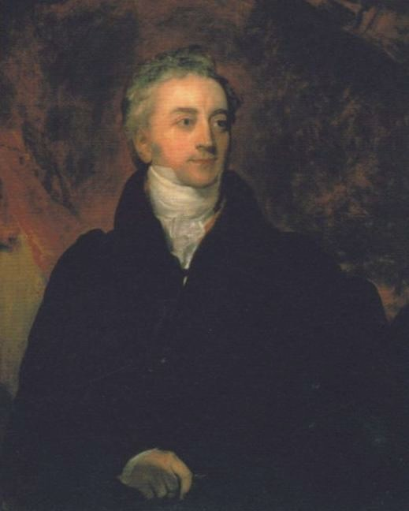
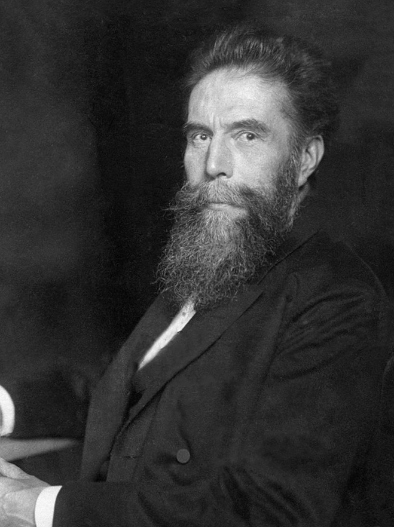
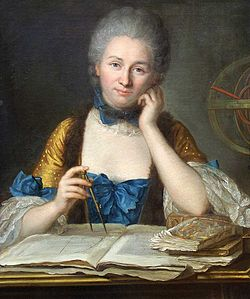
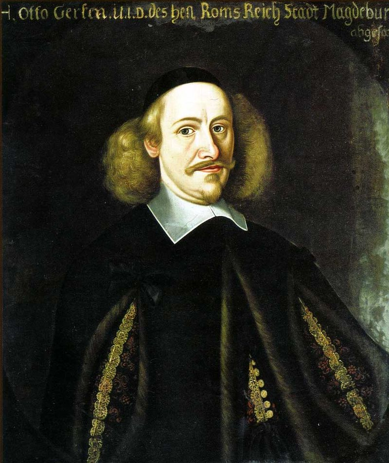

Física antigua
Empédocles demostró la existencia del aire mediante un artilugio que recibió el nombre de clepsidra, una esfera de cobre que se llenaba de agua cuando se sumergía en dicho líquido y que se caracterizaba porque tenía agujeros en el fondo y un cuello abierto. Aristóteles desarrolló la física aristotélica que habría de dominar a todo Occidente durante casi 2000 años.
Aristoteles 384 a. C., Estagira, Grecia - 322 a. C., Calcis, Grecia
Física clásica
Siglo XVII: revolución científica En el siglo XVI nacieron algunos personajes como Copérnico, Stevin, Cardano, Gilbert, Brahe, pero fue Galileo quien, a principios del siglo XVII, impulsó el empleo sistemático de la verificación experimental y la formulación matemática de las leyes físicas. Galileo descubrió la ley de la caída de los cuerpos y del péndulo, se lo puede considerar como el creador de la mecánica, también hizo las bases de la hidrodinámica, cuyo estudio fue continuado por su discípulo Torricelli que fue el inventor del barómetro (año 1643), el instrumento que más tarde utilizó Pascal para determinar la presión atmosférica. Pascal precisó el concepto de presión en el seno de un líquido y enunció el teorema de transmisión de las presiones. Boyle formuló la ley de la compresión de los gases (ley de Boyle-Mariotte).

Galileo Galilei, 1636
En 1687 Newton publicó los Philosophiæ naturalis principia mathematica (Principios matemáticos de la filosofía natural), una obra en la que se describen las leyes clásicas de la dinámica conocidas como las leyes
de Newton y la ley de la gravitación universal de Newton. El primer grupo de leyes permitía explicar la dinámica de los cuerpos y hacer predicciones del movimiento y equilibrio de cuerpos, la segunda ley permitía demostrar
las leyes de Kepler del movimiento de los planetas y explicar la gravedad terrestre (de aquí el nombre de gravedad universal). En esta época se puso de manifiesto uno de los principios básicos de la física, las leyes
de la física son las mismas en cualquier punto del Universo.
El desarrollo por Newton y Leibniz del cálculo infinitesimal proporcionó las herramientas matemáticas para el desarrollo de la física como ciencia
capaz de realizar predicciones. En esta época desarrollaron sus trabajos físicos como Robert Hooke y Christian Huygens estudiando las propiedades básicas de la materia y de la luz. Luego los científicos ingleses William
Wurts y Charles Demiano profundizaron el estudio de las causas de las leyes de Newton, es decir la gravedad.
En óptica, René Descartes estableció la ley de la refracción de la luz, formuló una teoría del arco
iris y estudió los espejos esféricos y las lentes. Fermat enunció el principio de la óptica geométrica que lleva su nombre, y Huygens, a quien también se le deben importantes contribuciones a la mecánica, descubrió
la polarización de la luz, en oposición a Newton, para quién la luz es una radiación corpuscular, propuso la teoría ondulatoria de la luz.
Hooke estudió las franjas coloreadas que se forman cuando la luz atraviesa
una lámina delgada; también, estableció la proporcionalidad. A finales del siglo XVII la física comienza a influir en el desarrollo tecnológico permitiendo a su vez el avance más rápido de esta. El desarrollo instrumental
(telescopios, microscopios y otros instrumentos) y el desarrollo de experimentos cada vez más sofisticados permitieron obtener grandes éxitos como la medida de la masa de la Tierra en el experimento de la balanza de
torsión. También aparecen las primeras sociedades científicas como la Royal Society en Londres en 1660 y la Académie des sciences en París en 1666 como instrumentos de comunicación e intercambio científico, teniendo
en los primeros tiempos de ambas sociedades un papel prominente las ciencias físicas.

Isaac Newton (1642 - 1727)
En Siglo XVIII: termodinámica y óptica A partir del siglo XVIII Boyle y Young desarrollaron la termodinámica. En 1733 Bernoulli usó argumentos estadísticos, junto con la mecánica clásica, para extraer resultados de la termodinámica, iniciando la mecánica estadística. En 1798 Thompson demostró la conversión del trabajo mecánico en calor y en 1847 Joule formuló la ley de conservación de la energía. En el campo de la óptica el siglo XVIII comenzó con la teoría corpuscular de la luz de Newton expuesta en su obra Opticks. Aunque las leyes básicas de la óptica geométrica habían sido descubiertas algunas décadas antes, el siglo XVIII fue bueno en avances técnicos en este campo produciéndose las primeras lentes acromáticas, midiéndose por primera vez la velocidad de la luz y descubriendo la naturaleza espectral de la luz. El siglo concluyó con el célebre experimento de Young de 1801 en el que se ponía de manifiesto la interferencia de la luz demostrando la naturaleza ondulatoria de ésta.
Thomas Young (1773 – 1829)
En Siglo XIX: electromagnetismo y estructura atómica La investigación física de la primera mitad del siglo XIX estuvo dominada por el estudio de los fenómenos de la electricidad y el magnetismo. Coulomb, Luigi Galvani, Faraday, Ohm y muchos otros físicos famosos estudiaron los fenómenos dispares y contraintuitivos que se asocian a este campo. En 1855 Maxwell unificó las leyes conocidas sobre el comportamiento de la electricidad y el magnetismo en una sola teoría con un marco matemático común mostrando la naturaleza unida del electromagnetismo. Los trabajos de Maxwell en el electromagnetismo se consideran frecuentemente equiparables a los descubrimientos de Newton sobre la gravitación universal y se resumen con las conocidas, ecuaciones de Maxwell, un conjunto de cuatro ecuaciones capaz de predecir y explicar todos los fenómenos electromagnéticos clásicos. Una de las predicciones de esta teoría era que la luz es una onda electromagnética. Este descubrimiento de Maxwell proporcionaría la posibilidad del desarrollo de la radio unas décadas más tarde por Heinrich Hertz en 1888. En 1895 Roentgen descubrió los rayos X, ondas electromagnéticas de frecuencias muy altas. Casi simultáneamente, Henri Becquerel descubría la radioactividad en 1896. Este campo se desarrolló rápidamente con los trabajos posteriores de Pierre Curie, Marie Curie y muchos otros, dando comienzo a la física nuclear y al comienzo de la estructura microscópica de la materia. En 1897 Thomson descubrió el electrón, la partícula elemental que transporta la corriente en los circuitos eléctricos proponiendo en 1904 un primer modelo simplificado del átomo.
Wilhelm Conrad Röntgen (1845 – 1923)
Energía
El concepto de energía surgió de la idea de la vis viva (fuerza viva) , que Leibniz define como el producto de la masa de un objeto y su velocidad al cuadrado; él creía que total de la vis viva (fuerza viva) se conservaba. Para demostrar la desaceleración debido a la fricción, Leibniz afirmó que el calor consistía en el movimiento aleatorio de las partes constituyentes de la materia - una opinión compartida por Isaac Newton, aunque pasaría más de un siglo para que esto fuese generalmente aceptado. En su libro Institutions de Physique (Lecciones de física) publicado en 1740 por Émilie marquesa de Châtelet incorpora la idea de Leibniz con observaciones prácticas de Gravesande para demostrar que la "cantidad de movimiento" de un objeto en movimiento es proporcional a su masa y al cuadrado de su velocidad (no la velocidad como Newton la demostró, lo que más tarde se llamó momentum).
Gabrielle Émilie (1706-1749)
Termodinámica
La historia de la termodinámica es una pieza fundamental en la historia de la física, la historia de la química, y la historia de la ciencia en general. Debido a la relevancia de la termodinámica en muchas áreas de la ciencia y la tecnología, su historia está finamente tejida con los desarrollos de la mecánica clásica, mecánica cuántica, magnetismo, y la cinética química, para aplicar a campos más distante tales como la meteorología, teoría de información, y biología (fisiología), y a desarrollos tecnológicos como la máquina de vapor, motor de combustión interna, Criogenia y generación de electricidad. El desarrollo de la termodinámica fue motivado y dirigido por la teoría atómica. También, aunque de una manera sutil, motivó nuevas direcciones en probabilidad y estadística; vea, por ejemplo, la línea de tiempo de la termodinámica. La historia de la termodinámica como disciplina científica se considera generalmente que comienza con Otto von Guericke quien, en 1650, construyó y diseñó la primera bomba de vacío y demostró las propiedades del vacío usando sus hemisferios de Magdeburgo. Guericke fue impulsado a hacer el vacío con el fin de refutar la suposición de Aristóteles que «la naturaleza aborrece el vacío». Poco después de Guericke, el físico y químico Robert Boyle estudió y mejoró los diseños de Guericke y en 1656, en coordinación con el científico Robert Hooke, construyó una bomba de aire. Con esta bomba, Boyle y Hooke observaron una correlación entre la presión, temperatura y volumen. Con el tiempo, se formularon la ley de Boyle, indicando que para un gas a temperatura constante, la presión y el volumen son inversamente proporcionales y otras leyes de los gases.
Otto-von-Guericke-TS (1602-1686)